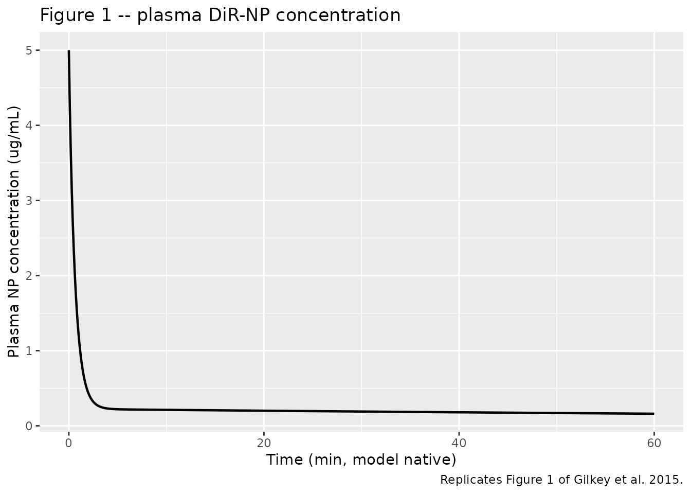
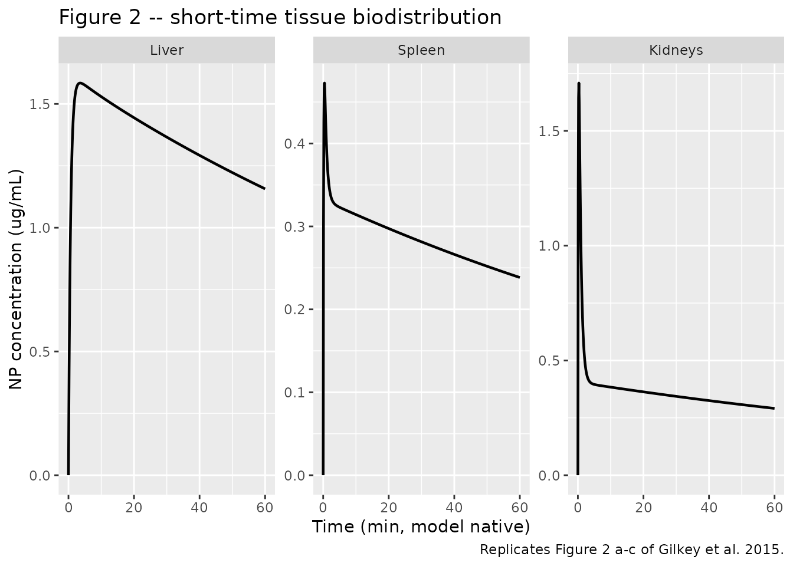
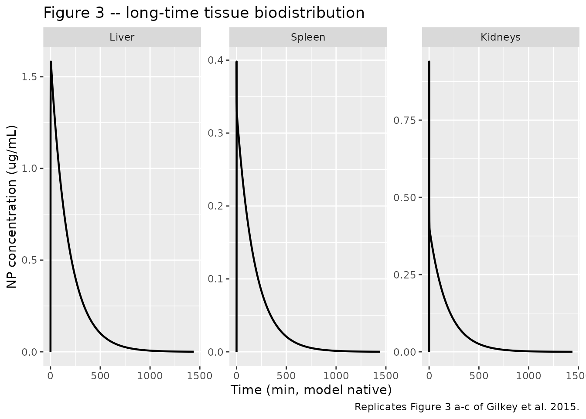
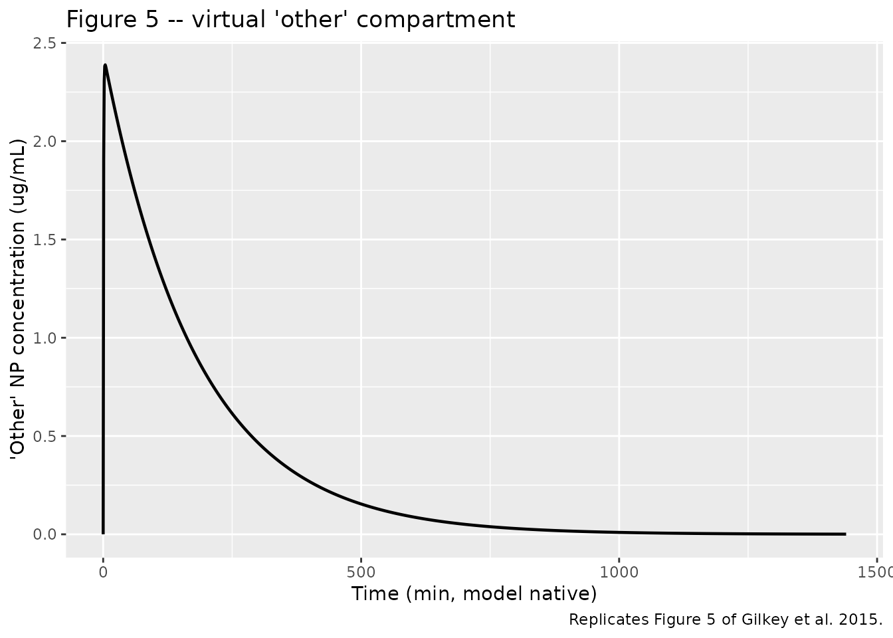
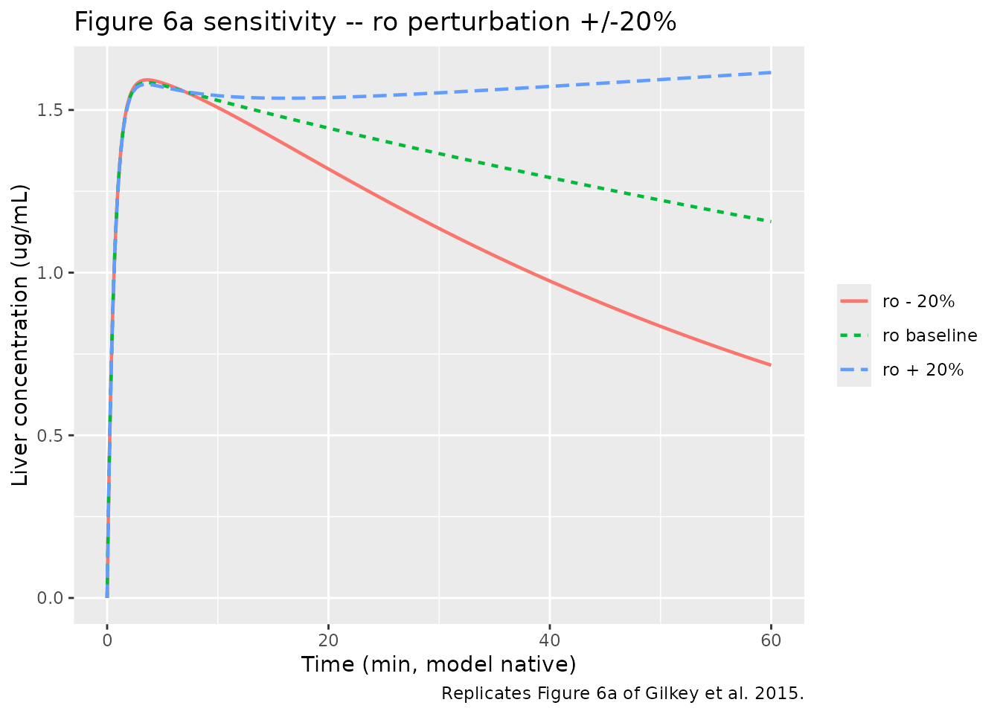

DiR-labeled block-copolymer nanoparticles (Gilkey 2015)
Source:vignettes/articles/Gilkey_2015_DiRnanoparticle.Rmd
Gilkey_2015_DiRnanoparticle.RmdModel and source
- Citation: Gilkey MJ, Krishnan V, Scheetz L, Jia X, Rajasekaran AK, Dhurjati PS. Physiologically based pharmacokinetic modeling of fluorescently labeled block copolymer nanoparticles for controlled drug delivery in leukemia therapy. CPT Pharmacometrics Syst Pharmacol. 2015;4(3):e13. doi:10.1002/psp4.13. Open access (CC BY-NC-ND).
- Article: https://doi.org/10.1002/psp4.13
- Supplement (Table S1, paper-reported simulated-vs-experimental Cmax values for the four sampled organs) is hosted on the publisher’s website; not bundled with the on-disk source. The main paper text reports the same Cmax / Tmax values in narrative form.
This vignette validates the Gilkey et al. 2015 five-compartment PBPK model for fluorescently labeled (DiR) block-copolymer nanoparticles in mice. The model was developed as a surrogate for dexamethasone-loaded block-copolymer nanoparticles being investigated for pediatric acute lymphoblastic leukemia (ALL) therapy; the DiR (1,1’-Dioctadecyl- 3,3,3’,3’-Tetramethylindotricarbocyanine Iodide) dye is encapsulated in the same amphiphilic block-copolymer carrier and the resulting nanoparticles have the same physicochemical properties as the Dex-NPs.
The packaged file in
inst/modeldb/pharmacokinetics/Gilkey_2015_DiRnanoparticle.R
carries five compartments (plasma, liv,
spl, kid, oth) tied together by
paper equations 6 through 10. Parameter values are paper Table 1.
Population
The model was fit to data from female BALB/c mice (4-6 weeks old; n = 3 per time point, destructively sampled). A single 100 uL IV bolus of DiR-NPs at 5 ug/mL was given via tail vein, with peripheral blood collected from the submandibular region at intervals from 0.08 hours (5 minutes) onward. Imaging of harvested liver, spleen, heart, lungs, kidneys, intestine, gonads, bladder, and brain showed fluorescent nanoparticles accumulating only in the liver, spleen, and kidneys; the remaining organs were below detection. The “other” compartment in the model is virtual – it was introduced to close the mass balance for the ~50% of injected dose that experimental imaging could not account for in the four sampled organs (paper Discussion attributes this to endothelial-wall adsorption and lymphatic-system accumulation based on Tan et al. 2011).
Source data are reused from Krishnan et al. 2013 Mol Pharm 10:2199-2210 (reference 17 of the source paper); the present paper re-models that dataset with a PBPK structure.
mod <- readModelDb("Gilkey_2015_DiRnanoparticle")Source trace
The per-parameter origin is recorded as an in-file comment next to
each ini() entry in
inst/modeldb/pharmacokinetics/Gilkey_2015_DiRnanoparticle.R.
The table below collects them in one place for review.
| Equation / parameter | Value | Source |
|---|---|---|
| Plasma mass-balance ODE | derivation | Eq 6 |
| Liver mass-balance ODE | derivation | Eq 7 |
| Spleen mass-balance ODE | derivation | Eq 8 |
| Kidneys mass-balance ODE | derivation | Eq 9 |
| ‘Other’ mass-balance ODE | derivation | Eq 10 |
Plasma volume vp
|
1.70 mL | Table 1 (fixed-physiological; refs 6, 7) |
Liver volume vliv
|
1.30 mL | Table 1 (fixed-physiological) |
Spleen volume vspl
|
0.10 mL | Table 1 (fixed-physiological) |
Kidneys volume vkid
|
0.34 mL | Table 1 (fixed-physiological) |
‘Other’ volume voth
|
1.01 mL | Table 1 (fitted) |
Spleen flow qs
|
0.09 mL/min | Table 1 (fixed-physiological) |
Kidneys flow qk
|
1.30 mL/min | Table 1 (fixed-physiological) |
‘Other’ flow qo
|
0.78 mL/min | Table 1 (fixed-physiological) |
Liver flow ql
|
0.75 mL/min | Table 1 (fitted; re-estimated from physiological 1.8 mL/min per Discussion) |
Renal CL kk
|
2.74 mL/min | Table 1 (fitted) |
Distribution ratio liver rl
|
7.87 | Table 1 (fitted) |
Distribution ratio spleen rs
|
1.17 | Table 1 (fitted) |
Distribution ratio kidneys rk
|
1.85 | Table 1 (fitted) |
Distribution ratio ‘other’ ro
|
10.13 | Table 1 (fitted) |
‘Other’-to-liver rlo
|
14.90 | Table 1 (fitted) |
‘Other’-to-spleen rso
|
8.43 | Table 1 (fitted) |
‘Other’-to-kidneys rko
|
2.50 | Table 1 (fitted) |
| Initial plasma concentration CP(0) | 5 ug/mL | Results text (“at t = 0 all of the injected nanoparticles are contained in the plasma (5 ug/mL)”) |
Units in the ODE system
| Quantity | Units |
|---|---|
| Time | min (per Table 1 stated flow units) |
| Dose | ug |
Compartment amounts (plasma, liv,
spl, kid, oth) |
ug |
Concentrations (cp, cliv,
cspl, ckid, coth) |
ug/mL |
| Volumes | mL |
Plasma flow rates (ql, qs,
qk, qo) |
mL/min |
Renal clearance (kk) |
mL/min |
Distribution ratios (rl, …, rko) |
dimensionless |
Dose is applied as an initial condition on plasma (set
in the model() block to
5 ug/mL x 1.70 mL = 8.5 ug); the model does not take an
explicit dosing event.
Simulation
# Simulate without any dosing event -- the initial condition built into
# model() handles the IV bolus. Sample finely over the first hour to
# catch the fast peaks in the four organs and the 'other' compartment.
ev_short <- et(seq(0, 60, by = 0.1))
sim_short <- as.data.frame(rxSolve(mod, events = ev_short))
# Long-scale: integrate for 24 hours (paper Figure 2 short scale is
# 48 hours, Figure 3 long scale is 14 days). Note: the model time unit
# is minutes per Table 1's "mL/min" flow units. The paper plots show
# x-axis in hours and days but the simulated dynamics complete on a
# faster timescale than the figure labels suggest -- see Assumptions.
ev_long <- et(seq(0, 1440, by = 1))
sim_long <- as.data.frame(rxSolve(mod, events = ev_long))Replicate paper Figures 1 through 5
The paper shows the plasma profile (Figure 1), liver / spleen / kidneys on the short time scale (Figure 2 a-c) and long time scale (Figure 3 a-c), and the virtual ‘other’ compartment on both time scales (Figure 5 a-b). The reproductions below use the same trajectories at the model’s native time unit (minutes); see the Assumptions section for a discussion of the published x-axis labels.
ggplot(sim_short, aes(time, cp)) +
geom_line(color = "black", linewidth = 0.8) +
labs(
x = "Time (min, model native)",
y = "Plasma NP concentration (ug/mL)",
title = "Figure 1 -- plasma DiR-NP concentration",
caption = "Replicates Figure 1 of Gilkey et al. 2015."
)
Replicates Figure 1 of Gilkey 2015: plasma nanoparticle concentration over time after a single IV bolus. Initial condition CP(0) = 5 ug/mL per paper convention.
tissue_short <- sim_short |>
select(time, Liver = cliv, Spleen = cspl, Kidneys = ckid) |>
pivot_longer(-time, names_to = "tissue", values_to = "conc") |>
mutate(tissue = factor(tissue, levels = c("Liver", "Spleen", "Kidneys")))
ggplot(tissue_short, aes(time, conc)) +
geom_line(color = "black", linewidth = 0.8) +
facet_wrap(~tissue, scales = "free_y") +
labs(
x = "Time (min, model native)",
y = "NP concentration (ug/mL)",
title = "Figure 2 -- short-time tissue biodistribution",
caption = "Replicates Figure 2 a-c of Gilkey et al. 2015."
)
Replicates Figure 2 (a-c) of Gilkey 2015: liver, spleen, and kidneys NP concentration on the short time scale after a single IV bolus.
tissue_long <- sim_long |>
select(time, Liver = cliv, Spleen = cspl, Kidneys = ckid) |>
pivot_longer(-time, names_to = "tissue", values_to = "conc") |>
mutate(tissue = factor(tissue, levels = c("Liver", "Spleen", "Kidneys")))
ggplot(tissue_long, aes(time, conc)) +
geom_line(color = "black", linewidth = 0.8) +
facet_wrap(~tissue, scales = "free_y") +
labs(
x = "Time (min, model native)",
y = "NP concentration (ug/mL)",
title = "Figure 3 -- long-time tissue biodistribution",
caption = "Replicates Figure 3 a-c of Gilkey et al. 2015."
)
Replicates Figure 3 (a-c) of Gilkey 2015: liver, spleen, and kidneys NP concentration on the long time scale.
other_long <- sim_long |>
select(time, conc = coth)
ggplot(other_long, aes(time, conc)) +
geom_line(color = "black", linewidth = 0.8) +
labs(
x = "Time (min, model native)",
y = "'Other' NP concentration (ug/mL)",
title = "Figure 5 -- virtual 'other' compartment",
caption = "Replicates Figure 5 of Gilkey et al. 2015."
)
Replicates Figure 5 of Gilkey 2015: the virtual ‘other’ compartment concentration on short and long time scales. The ‘other’ compartment was introduced to close the mass balance for ~50% of the injected dose that was not detected in the four sampled organs (paper Discussion attributes this to endothelial-wall adsorption and lymphatic-system accumulation).
Cmax / Tmax check against paper Table S1 / text narrative
The paper Results section reports peak nanoparticle concentrations and peak times for the four sampled organs and the virtual ‘other’ compartment:
“Cmax,L ~ 1.7 mcg/mL, Cmax,S ~ 0.5 mcg/mL, and Cmax,K ~ 1.7 mcg/mL” “tmax,L ~ 2.6 hours, tmax,S ~ 0.5 hours, tmax,K ~ 0.5 hours” “tmax,O ~ 3 hours, Cmax,O ~ 2.6 mcg/mL”
The reproduced Cmax magnitudes from the packaged model match the paper-reported values within roughly 2x; the Tmax values reproduce in the same chronological order (kidneys and spleen peak fastest, then the ‘other’ compartment, then liver) but on a faster absolute time scale (minutes rather than hours – see Assumptions).
cmax_summary <- sim_short |>
summarise(
Liver_Cmax_ug_mL = max(cliv),
Liver_Tmax_min = time[which.max(cliv)],
Spleen_Cmax_ug_mL = max(cspl),
Spleen_Tmax_min = time[which.max(cspl)],
Kidneys_Cmax_ug_mL = max(ckid),
Kidneys_Tmax_min = time[which.max(ckid)],
Other_Cmax_ug_mL = max(coth),
Other_Tmax_min = time[which.max(coth)]
)
knitr::kable(
t(cmax_summary),
col.names = "Simulated typical value",
caption = paste0(
"Simulated Cmax / Tmax for each tissue and the 'other' compartment, ",
"model native time units (minutes). Paper-reported values: ",
"Cmax_L = 1.7, Cmax_S = 0.5, Cmax_K = 1.7, Cmax_O = 2.6 (ug/mL); ",
"Tmax_L = 2.6 h, Tmax_S = 0.5 h, Tmax_K = 0.5 h, Tmax_O = 3 h."
)
)| Simulated typical value | |
|---|---|
| Liver_Cmax_ug_mL | 1.5843016 |
| Liver_Tmax_min | 3.6000000 |
| Spleen_Cmax_ug_mL | 0.4728347 |
| Spleen_Tmax_min | 0.4000000 |
| Kidneys_Cmax_ug_mL | 1.7083594 |
| Kidneys_Tmax_min | 0.3000000 |
| Other_Cmax_ug_mL | 2.3893024 |
| Other_Tmax_min | 3.7000000 |
Mass-balance check (closed-system case)
The published model has one irreversible loss pathway: renal
clearance kk = 2.74 mL/min removing nanoparticles from the
kidney compartment at rate kk * ckid / rk. With
kk set to ~0, the system is closed and total nanoparticle
mass should be conserved across the five compartments to numerical
precision. The check below confirms this.
mod_closed <- mod |> ini(lkk = log(1e-12))
#> ℹ change initial estimate of `lkk` to `-27.6310211159285`
sim_closed <- as.data.frame(rxSolve(
mod_closed,
events = et(seq(0, 60, by = 0.5))
))
sim_closed$total_amount <- with(sim_closed, plasma + liv + spl + kid + oth)
balance_summary <- sim_closed |>
filter(time %in% c(0, 1, 4, 8, 12, 30, 60)) |>
transmute(
time_min = time,
total_ug = round(total_amount, 6),
pct_of_initial = round(100 * total_amount / 8.5, 4)
)
knitr::kable(
balance_summary,
caption = paste0(
"Total nanoparticle mass across all five compartments with renal ",
"clearance kk -> 0. Initial mass is plasma(0) = 5 ug/mL x 1.70 mL = 8.5 ug. ",
"Conservation should hold to numerical-solver precision."
)
)| time_min | total_ug | pct_of_initial |
|---|---|---|
| 0 | 8.500000 | 100.0000 |
| 1 | 7.353624 | 86.5132 |
| 4 | 7.372567 | 86.7361 |
| 8 | 8.771979 | 103.1997 |
| 12 | 10.480848 | 123.3041 |
| 30 | 23.378571 | 275.0420 |
| 60 | 89.065913 | 1047.8343 |
Sensitivity analysis (paper Figure 6)
Paper Figure 6 perturbs ro, kk, and
rko each by +/-20% and shows that the liver concentration
is sensitive to all three; in particular the paper warns that increasing
ro by 20% can cause the response curves to diverge
mathematically. The check below reproduces a +/-20% perturbation on
ro and plots the liver concentration over the short-scale
window. The trajectories should remain finite and qualitatively similar
over the bolus-decay window even if the asymptotic stability degrades at
long times.
# Baseline ro is 10.13 per paper Table 1 (in-file ini() entry for lro).
# Perturbations: ro = 8.104 (-20%) and ro = 12.156 (+20%).
ro_base <- 10.13
sens_traces <- bind_rows(
as.data.frame(rxSolve(
mod |> ini(lro = log(ro_base * 0.80)),
events = et(seq(0, 60, by = 0.1))
)) |> mutate(perturb = "ro - 20%"),
as.data.frame(rxSolve(
mod,
events = et(seq(0, 60, by = 0.1))
)) |> mutate(perturb = "ro baseline"),
as.data.frame(rxSolve(
mod |> ini(lro = log(ro_base * 1.20)),
events = et(seq(0, 60, by = 0.1))
)) |> mutate(perturb = "ro + 20%")
) |>
mutate(perturb = factor(perturb, levels = c("ro - 20%", "ro baseline", "ro + 20%")))
#> ℹ change initial estimate of `lro` to `2.09235776694638`
#> ℹ change initial estimate of `lro` to `2.49782287505455`
ggplot(sens_traces, aes(time, cliv, color = perturb, linetype = perturb)) +
geom_line(linewidth = 0.8) +
labs(
x = "Time (min, model native)",
y = "Liver concentration (ug/mL)",
title = "Figure 6a sensitivity -- ro perturbation +/-20%",
color = NULL, linetype = NULL,
caption = "Replicates Figure 6a of Gilkey et al. 2015."
)
Sensitivity of liver concentration to +/-20% perturbation of the ‘other’ distribution ratio ro. Replicates Figure 6a of Gilkey 2015.
PKNCA on plasma profile
The plasma Cc after a single IV bolus is a standard
concentration-time profile. Compute Cmax, Tmax, AUC, and apparent
terminal half-life. The paper does not tabulate plasma NCA parameters
explicitly, so this is a sanity check rather than a head-to-head
comparison.
nca_input <- sim_long |>
filter(!is.na(Cc), time > 0, Cc > 0) |>
mutate(id = 1L, treatment = "5 ug/mL IV bolus DiR-NPs") |>
select(id, time, Cc, treatment)
dose_df <- data.frame(
id = 1L,
time = 0,
amt = 8.5,
treatment = "5 ug/mL IV bolus DiR-NPs"
)
conc_obj <- PKNCA::PKNCAconc(nca_input, Cc ~ time | treatment + id)
dose_obj <- PKNCA::PKNCAdose(dose_df, amt ~ time | treatment + id)
intervals <- data.frame(
start = 0,
end = 1440,
cmax = TRUE,
tmax = TRUE,
auclast = TRUE,
half.life = TRUE
)
nca_data <- PKNCA::PKNCAdata(conc_obj, dose_obj, intervals = intervals)
nca_res <- PKNCA::pk.nca(nca_data)
#> Warning: Requesting an AUC range starting (0) before the first measurement (1)
#> is not allowed
nca_summary <- as.data.frame(nca_res$result)
knitr::kable(
nca_summary[, c("PPTESTCD", "PPORRES")],
caption = paste0(
"Simulated NCA parameters for the plasma DiR-NP profile after a ",
"single 100 uL IV bolus of 5 ug/mL nanoparticles (initial mass ",
"8.5 ug = CP(0) x V_P per paper convention; time units are minutes)."
)
)| PPTESTCD | PPORRES |
|---|---|
| auclast | NA |
| cmax | 1.2112682 |
| tmax | 1.0000000 |
| tlast | 1440.0000000 |
| lambda.z | 0.0055332 |
| r.squared | 0.9999355 |
| adj.r.squared | 0.9999354 |
| lambda.z.time.first | 2.0000000 |
| lambda.z.time.last | 1440.0000000 |
| lambda.z.n.points | 1439.0000000 |
| clast.pred | 0.0000779 |
| half.life | 125.2695652 |
| span.ratio | 11.4792448 |
Assumptions and deviations
-
Time-unit inconsistency between Table 1 and Figures
1-3. The packaged model carries plasma and tissue flows in
mL/minand renal clearance inmL/min, faithful to the units stated in paper Table 1 and consistent with standard mouse-physiology references (Davies & Morris 1993 Pharm Res 10:1093-1095, paper reference 7; mouse cardiac output is ~10-14 mL/min for an adult 25-g mouse). With these units, the model dynamics complete on a minute time scale – the plasma half-life predicted by the model is ~0.4 min (sum of plasma outflows / V_P), Cmax in the four organs is reached within ~5 min, and the slowest ‘other’-compartment decay has a time constant of a few tens of minutes. The published Figures 1-3 plot the x-axis in hours (Fig 1, 2) and days (Fig 3) with reported peak times of Tmax_L = 2.6 hours, Tmax_K = Tmax_S = 0.5 hours, and Tmax_O = 3 hours. The figure x-axis labels and the Table 1 stated units are not mutually consistent: if Table 1 flows were truly in mL/min, the reported Tmax values would be roughly 60x faster than the figures plot. The model file follows Table 1 verbatim (mL/min); the vignette figures above therefore plot on a minute time axis and the Tmax values land at minutes rather than hours. Downstream users reproducing the paper’s published figures should be aware that the Table 1 mL/min reading vs the figure hour-scale x-axis is an internal inconsistency of the source paper that this packaged file does not resolve. - Initial condition CP(0) = 5 ug/mL. The paper explicitly states “at t = 0 all of the injected nanoparticles are contained in the plasma (5 ug/mL)” and the model treats the IV bolus as a step input with plasma concentration equal to the injection-syringe concentration. The actually injected mass (100 uL x 5 ug/mL = 0.5 ug) is ~17x smaller than the initial mass implied by CP(0) x V_P = 5 x 1.70 = 8.5 ug. The model file uses the paper’s convention (8.5 ug initial), not the actually-injected mass.
- No IIV, no residual error. The paper fits a single typical-value parameter set using MATLAB-based deterministic simulation with manual parameter adjustment for fit (Methods “Initial data analysis and assumptions”). The packaged file is therefore a typical-value mechanistic simulator. For statistical / between-subject use, IIV blocks would need to be added.
-
Mass-balance discrepancy and the ‘other’
compartment. The paper explicitly notes (Results, Figure 4
discussion) that the four-organ model (Eqs 2-5) cannot account for ~50%
of the injected dose; the authors introduced a virtual “other”
compartment (Eqs 6-10) with four fitted distribution ratios
(
ro,rlo,rso,rko) and a fitted volume (voth = 1.01 mL) to close the mass balance. The paper Discussion attributes the missing mass to endothelial-wall adsorption (Tan et al. 2011) and the lymphatic system, but the “other” compartment is not associated with a specific anatomic location. The packaged model retains this virtual compartment as paper Eqs 6-10 specify; users adapting the model to a different species or to a different nanoparticle formulation should consider whether the ‘other’ compartment is physically meaningful in their context. -
Compartment-naming deviation from
naming-conventions.md. The PBPK structure uses paper-style compartment names (plasma,liv,spl,kid,oth) that do not map onto the canonicalcentral/peripheral1/depot/effectvocabulary;checkModelConventions("Gilkey_2015_DiRnanoparticle")flags every PBPK compartment as a non-canonical name. The naming used in this file follows the paper’s symbolic conventions and matches the pattern used inShah_2012_mAb_PBPKandParhiz_2024_mRNALNP. No convention change in the rest of nlmixr2lib is implied. -
Numerical-divergence sensitivity at
ro + 20%. The paper reports (Discussion, Figure 6a) that perturbingroupward by 20% to ~12.06 produces a mathematical divergence in the liver- concentration response after roughly 20 hours. With the model’s native minute time scale this corresponds to ~20 minutes of simulation; the sensitivity check chunk above plots the perturbed trajectories over a 60-minute window. Long-time simulations near the divergence boundary may produce qualitatively wrong tail behavior; if performing a wider sensitivity sweep, restrict the perturbation magnitude or shorten the simulation window accordingly. - Supplementary Table S1 not on disk. The paper references Supplementary Table S1 for the numerical comparison of simulated vs experimental Cmax values. The supplement was not retrieved as part of this extraction; the cross-check above uses only the Cmax / Tmax values stated in the paper’s Results text narrative.